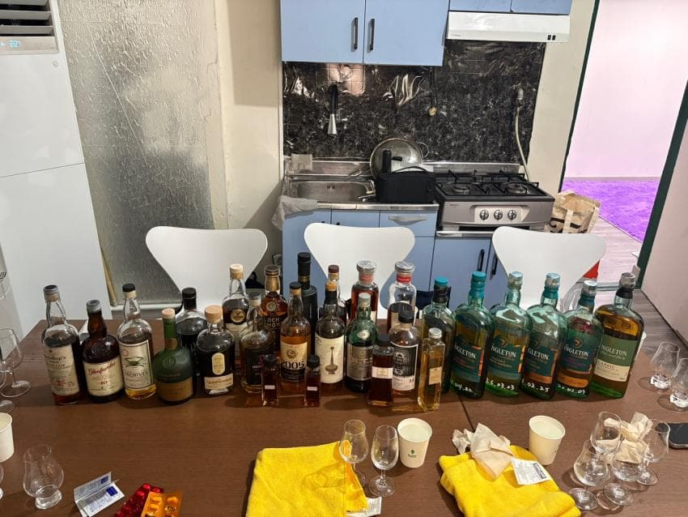
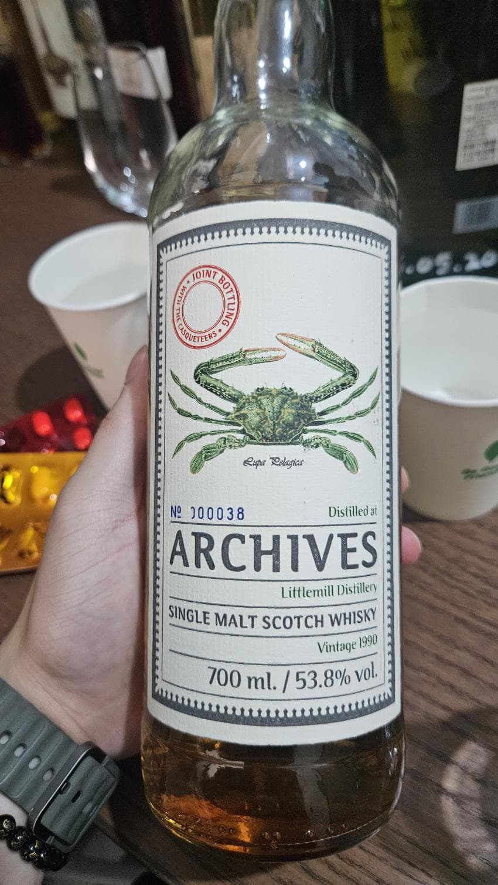

· 7월13일 영등포 비욥 짧은 리뷰
· 7/20 성균관대역 비욥 리뷰
· 비욥 리뷰) 240814 브랜디&럼 비욥 간단 리뷰
· 스압) 241004 당산역 비욥
· 250106 성대역 비욥 리뷰
· 250118 영등포 비욥 리뷰
· 250218 홍대입구 비욥 리뷰
· 250223 아갤비욥 리뷰 러프안
· 250329 서울대입구 비욥
· 250503 설입비욥 후기
· 250602 성대역 비욥 리뷰 간단하게
· 250705 남성역 비욥 짧은 리뷰
· 250813 성균관대역 비욥 리뷰
· 비욥리뷰) 250823 모란역 라프멸망전
· 비욥리뷰) 250920 설입비욥
· 스압) 251214 신촌 블렌더스 비욥
· 260221 서울대입구 비욥(뉴비주의)
· 260222 강남역 비욥
· 260322 왕십리 비욥
· 260523 대구비욥
아갤에서 평민비욥할때는 아무도 안오더니
핰갤에서 대부호차력쇼비욥하니 다 오는거 뭐지요?

오늘의 바틀 라인업은 다음과 같습니다.
리뷰 고고

1. 아카이브 리틀밀 1990 53.8%
허브 스파이스, 알로에, 바나나크림, 아세톤
향긋한 허브 스파이스가 독보적인 개성으로 다가오는 한 잔. 풀 내음 가득한 그래시함과 허브 특유의 스파이스함이 코끝을 강하게 자극한다. 마치 아그리꼴 럼 같기도 하고 한편으로는 라이 위스키를 연상시키기도 하는 이색적인 맛이다. 입안에 머금었을 때도 허브 고유의 맵싹함과 알싸한 풍미가 꽤나 직관적으로 돋보인다.
근데 제가 매운걸 별로 안좋아함 ㅎㅎ;
88-87-88
2. 싱글톤 글렌듈란 1976 SR2014 59.8% / 싱글톤 글렌듈란 클래식 40%
청사과, 자두, 꿀, 청포도, 더스티
강렬한 청사과와 잘 익은 자두, 그리고 자두사탕을 베어 문 듯한 과즙의 맛이 화려하게 퍼져나간다. 뒤이어 은근하게 피어오르는 고소한 곡물 향과 함께, 곡물 특유의 구수한 단맛과 꿀의 감미로움이 낭낭하게 밀려온다. 노징 단계에서는 화사하고 싱그러운 청포도 향이 꽤나 단단하게 중심을 잡아주었지만, 막상 맛을 보면 프루티함보다는 곡물 쪽에서 배어 나오는 달달함이 풍성하게 피어오른다.
89-88-88
글렌듈란의 특징을 알아보고자 글렌듈란 엔트리인 클래식도 같이 먹어보았다. 아마 잘 익은사과와 자두, 자두사탕으로 이어지는 달달한 향이 글렌듈란의 특징이 아닐까 싶다.
3. 글렌파클라스 40년 46%
적사과, 토피, 란시오, 초콜릿, 건살구
일반적인 위스키에서는 좀처럼 보기 힘든 고숙성 특유의 중후한 란시오(Rancio) 캐릭터와 함께 적사과, 끈적한 토피, 부드러운 초콜릿이 빈틈없이 꽉 뭉쳐진 향이 난다. 마치 화려한 아로마들을 동그랗게 응축시켜 놓은 듯한 밀도 높은 정교함이 느껴진다. 혀 위를 가득 채우는 순간 잘 익은 자두와 정향 특유의 알싸한 스파이스가 파도처럼 범람하며, 벨벳 같은 파우더리한 질감 속에서 사과와 자두의 새콤달콤함, 초콜릿의 부드러움이 완벽한 조화를 이룬다.
패밀리 캐스크 시리즈와는 결이 다른, 글렌파클라스만의 셰리를 잘 표현한 듯 하다.
90-90-89
4. 로크로몬드 30년 47%
꿀, 사과, 거봉, 자두, 살구, 복숭아, 가죽, 체다치즈, 원목
상당히 두터운 밀도감을 자랑하는 화려한 향을 지녔다. 달콤한 꿀, 상큼한 사과, 쥬시한 거봉까지 표기된 노트만 보면 평범해 보일 수 있으나 향의 볼륨과 깊이가 무척이나 묵직하다. 살구와 복숭아 같은 핵과류의 진한 향이 뿜어져 나오고, 고숙성 위스키에서만 느낄 수 있는 중후한 가죽과 클래식한 원목 향이 낭낭하게 조화를 이룬다. 은은하게 스쳐 지나가는 고소한 체다치즈 같은 유제품 뉘앙스도 흥미롭다. 맛에서는 갓 구운 빵이나 구수한 곡식에서 배어 나오는 묵직한 단맛과 함께, 즙이 가득 찬 잘 익은 사과의 직관적인 단맛이 매력적으로 도드라진다.
89-89-88
5. WAGE 부시밀 1991 46.2%
복숭아, 살구, 젤리, 샤인머스캣, 사과
코를 대는 순간 비강을 부드럽게 헤집으며 뿜어져 나오는 복숭아, 샤인머스캣, 살구, 그리고 달콤한 과일 젤리 향의 체급이 그야말로 압도적이다. 마치 레드브레스트 27년이 자연스럽게 연상될 만큼 화려하고 품격 있는 아로마를 자랑한다. 입안에서는 잘 익은 거봉과 싱그러운 샤인머스캣, 포도 젤리 특유의 진한 포도 맛이 그야말로 팡 터져나간다. 그리고 그 화려한 포도 풍미의 주변을 복숭아와 살구의 감미로운 단맛이 빈틈없이 가득 채워준다. 다만 삼킨 뒤 끝자락에 아주 살짝 남는 특유의 비릿한 곡물 맛은 못내 아쉬운 부분이다.
91-90-90
6. 글렌드로낙 1994 28년#474 51.8%
건자두, 매실, 담배, 가죽, 초콜릿
건자두의 진득한 달콤함과 잘 익은 매실의 산뜻한 시트러스가 기분 좋게 공존하는 향으로, 무척이나 오묘한 매력이 돋보인다. 오랜 세월을 머금은 묵은 오크통의 뉘앙스를 담은 묵직한 담배와 중후한 가죽 향이 깊이 있게 피어오르고, 부드러운 초콜릿의 단 향이 달콤함을 더한다. 파우더리한 질감 속에 살짝 섞여 있는 앤틱한 먼지 같은 더스티함 역시 입체감을 부여한다. 초콜릿의 진하고 깊은 달콤함과 매실 특유의 침샘을 자극하는 새콤달콤함이 절묘하게 잘 어우러지는 기분 좋은 한 잔이다.
90-90-90
7. 글렌드로낙 28년 그랜저 배치11 48.9%
밀크초콜릿, 카카오, 초코우유, 건자두
잔을 채우자마자 밀크초콜릿이나 부드러운 초코우유를 연상시키는 밀키하고 감미로운 향이 화사하게 퍼져나간다. 질감은 부드럽고 밀키하지만, 그 바탕에 깔린 셰리 고유의 풍미는 꽤나 묵직하고 견고하다. 카카오 특유의 텁텁함이 전혀 없이 깔끔하게 정돈된 풍미와, 잘 말린 건자두의 진한 달콤함이 강력하게 전면에 드러난다. 이 진한 달콤함 사이로 은은하게 새콤한 매실이나 달콤새콤한 살구 향이 기분 좋게 배어 나와, 전체적인 맛의 밸런스를 아주 영리하게 완성해 준다.
91-91-90
8. 맥킬롭 몰트락 1991 52.4%
가죽, 우디, 초콜릿, 황, 분필, 매실
향에서는 고숙성 셰리 특유의 중후한 가죽 향과 깊은 우디함, 그리고 분필을 연상시키는 쵸키한 미네랄리티가 매력적으로 올라온다. 뒤이어 쫀득한 곶감에서 느껴질 법한 진득한 달콤함과 잘 익은 매실의 산뜻하고 새콤함이 입안에서 훌륭하게 어우러진다. 파우더리하고 매끄러운 질감 속에서 달콤함과 새콤함의 완벽한 조화를 보여주며, 마지막까지 단단한 구조감을 잃지 않는 아주 잘 만들어진 웰메이드 셰리의 정석이다.
90-90-91
신기하게 생긴 담배하나 펴주고
9. 듀퓨이 LOT90 GC 64.9%
살구, 무화과, 매실, 복숭아, 데이지
그랑샹파뉴 특유의 뛰어난 밸런스와 화사한 뼈대가 직관적으로 선명하게 느껴진다. 경쾌하고 밝은 톤의 살구, 달콤한 무화과, 싱그러운 청포도, 그리고 잘 익은 복숭아의 풍미가 입안에서 그야말로 화려하게 팡 터져나간다. 그 주변을 은은하게 맴도는 데이지 꽃잎의 우아한 플로럴 아로마가 아름다운 자취를 남기며, 마지막 단계에서는 매실 특유의 기분 좋은 새콤함이 입안의 맛을 산뜻하게 환기해 주며 매끄럽게 끝맺는다.
88-89-88
10. 듀퓨이 LOT73 PC 62.2%
매실, 우메보시, 초콜릿, 육두구, 청포도
매실과 새콤한 우메보시를 베어 문 듯 침샘을 자극하는 산뜻한 새콤함이 제일 먼저 직관적으로 다가온다. 이내 상큼하고 달콤한 청포도의 과즙과 부드럽고 진한 초콜릿의 달달함이 자연스럽게 이어지며 매력적인 반전을 선사한다. 여기에 육두구 같은 따뜻한 향신료의 뉘앙스와 함께, 은은하게 피어오르는 매혹적인 제비꽃 향이 더해져 맛의 레이어를 한층 더 풍성하고 고급스럽게 넓혀준다.
89-89-88
11. 아벨라워 아부나흐 배치20 60.5%
산딸기, 블랙커런트, 바닐라, 자두, 건살구, 견과류
산뜻하고 싱그러운 산딸기 향과 함께 진하게 졸여낸 듯한 블랙커런트, 새콤달콤한 자두, 건살구의 풍성한 아로마가 무척이나 아름답고 선명하게 피어오른다. 셰리 캐스크 특유의 진득하고 강렬한 단맛이 전면에 드러나는 가운데, 견과류 고유의 고소하고 너티한 뉘앙스도 살짝씩 고개를 내밀며 맛의 재미를 더해주는 부분이 무척 흥미롭다. 깊은 숙성감이나 복잡미가 아주 깊게 깔려있지는 않지만, 누가 마셔도 직관적으로 맛있는 폭발적인 풍미를 선사하는 훌륭한 한 잔이다.
88-90-88
바베큐 해먹기
사케마시기
짠
사케 또 마심
병이 예쁜 사케를 마심
--이후 현생이슈로 귀가--
재밌었습니다
댓글 9개